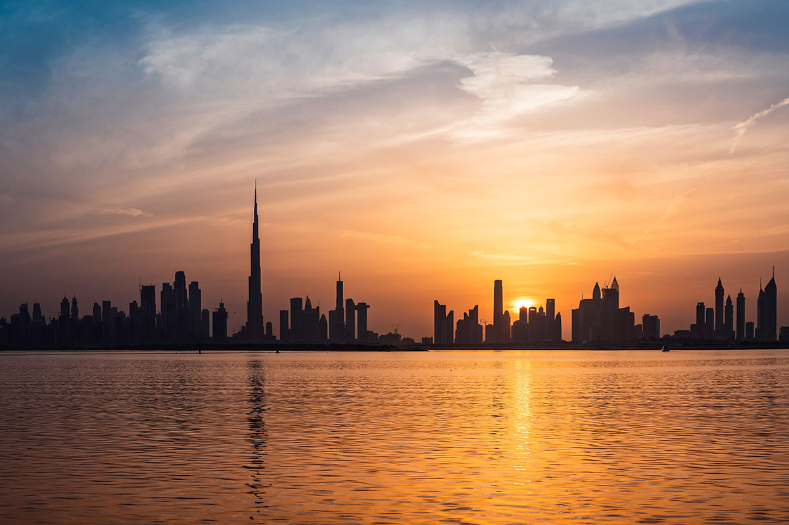

Project video
Article
The world is running out of sand. Apart from water, sand is the most used resource by humankind, 50 billion tons is consumed every year. Concrete and glass could be considered pivotal uses of sand that have shaped the way modern society lives. These materials play an integral part in the structures we inhabit, to the objects we interact with on a daily basis. The construction industry's production of concrete is the main culprit of sand scarcity.
Burj Khalifa, Dubai, the current tallest skyscraper in the world is said to have used 330,000 cubic meters of concrete, a record-breaking amount. The building has a designed life span of 100 years, a seemingly long time. However, when compared to the almost 2000-year-old Roman concrete dome of the Pantheon, Rome, 100 years is no life at all! Population growth, increased demand and the development of a take - make - dispose society is causing us to burn through the world's resources alarming rate.

To many, sand can appear to be an endless resource that covers beaches and deserts all around the world, but it is important to note that not all sand is the same. Desert sand eroded by air is too smooth and fine. Beach is full of contaminants such as shell, biomass and salt. Hard quartz grains slowly water eroded makes the perfect suit for the construction industry. This can be found at the bed of rivers and lakes across the world, and are being harvested for this valuable material as we speak.
Developing countries such as China and India, where construction is booming, are using sand at an increasingly rapid rate; China is the biggest consumer of sand in the world, the country mines 230 million tons of sand from Lake Poyang every year. This excessive extraction has devastating environmental effects, from the removal of wildlife habitats to suspended silt preventing sunlight penetration, removing the oxygen and causing the lakes to die.
The destructive effects of mining for sand are now evident around the world and many countries have put laws in place to protect areas. However, the profit still drives mining attempts, as seen in India “sand miners have killed law enforcement officers who have attempted to halt the strip-mining of India’s rivers.” - National Geographic.
When we see a plethora of sandy beaches surrounding us all, the consideration that this resource is scarce seems almost comical. However, our global demand for building, energy and development is threatening one of the natural things we most admire. Despite attempts to enforce restrictions by some, there is no prevention of demand, which can lead to conflict and violence. By raising the concern for sand as a result of our insatiable demands, highlights yet another case of over consumption.
Further Links